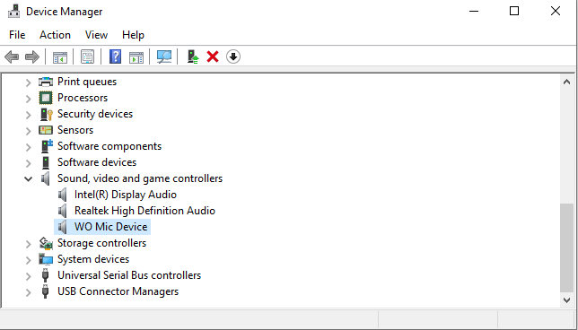

WO Mic 到底值不值得掏钱？一笔虚拟麦克风的时间账
WO Mic 本身完全免费，但它的"免费"有隐性成本——驱动折腾、五分钟断连、iOS 限制一堆。把三类用户的时间账算透，你就知道该不该掏钱换省心。
它到底值不值得掏钱？
先把话说在前头：WO Mic 本身是免费的，不收一分钱，源码也在 GitHub 上公开。但"免费"不等于"零成本"——我用了大半年，踩过的坑、花掉的排查时间，折算下来其实是一笔不小的隐性开支。这篇文章就是把这笔账算明白：用 WO Mic 省下的钱，值不值回你花进去的时间？要不要干脆掏点钱换个省心方案？
免费版到底给了什么，又没给什么
womic官网 把核心功能说得很直白：把手机的麦克风通过 Wi-Fi、蓝牙、USB 三种方式（iOS 只有 Wi-Fi）传到电脑上，在 Windows 里生成一个叫 "WO Mic Device" 的虚拟声卡。这个功能本身完全免费，连广告都没有。但免费的边界在哪，得掰开了说。
免费版有的：
- 三种传输方式（Android），iOS 端支持 Wi-Fi
- 虚拟驱动安装后系统里出现独立麦克风设备
- 客户端自带 Statistics 面板能实时看驱动状态、延迟、丢包率
- 采样率最高到 48kHz，足以覆盖会议、直播、语音聊天这些常见场景
免费版没有的，或者说需要你自己扛的：
- 驱动装完必须重启，有时候还会被安全软件拦截——我那台联想笔记本装完驱动直接被 Windows Defender 卡了三天，最后手动去隔离区放行才搞定
- 没有任何技术支持，出问题全靠 Google 和翻womic文档
- Wi-Fi 连接对网络环境敏感，公司/校园网的 AP 隔离直接让你连不上
- iOS 端功能阉割，蓝牙和 USB 全不能用，只能走 Wi-Fi

上面这张图是驱动正常的状态——设备管理器里 "声音、视频和游戏控制器" 下面清清楚楚有个 WO Mic Device。但如果你装完没重启，或者驱动被拦了，这里要么没有，要么带黄色感叹号。Statistics 面板里 Driver state 字段也是同理，1 是正常，0 就是驱动没加载。这些排查逻辑得你自己记着，没人会提醒你。
三类用户的时间账
算账得看你是谁。我把 WO Mic 的用户分成三类，每类的时间成本天差地别。
轻度用户：偶尔开个会，一年用不到十次
这类人最常见的场景是：电脑自带麦克风坏了，手机凑合用一下 Teams 或腾讯会议，一周撑死用一次。
免费版够不够？ 完全够。从官方下载拿客户端装一次驱动、重启一次、连上就能用。一年花在上面的时间撑死两小时——其中大部分是第一次装的时候在设备管理器里确认驱动状态。
每单位时间成本： 两小时换一年的应急使用，值。哪怕中间遇到一次断连，重连就是五秒钟的事。
要不要掏钱？ 不用。掏钱买个 USB 麦克风最便宜也要五六十，用不到那频率纯属浪费。
主力用户：每天开播、录课、打电话会议
这类人是 WO Mic 的重度依赖者——每天至少开两小时，有的甚至全天挂着。我自己属于这一类：远程工作 + 偶尔录个技术分享，白天大部分时间开着它。
免费版够不够？ 够是够，但体验差。最头疼的问题我给你们列一下：
五分钟自动断连。 这个是 Windows 电源管理干的好事——默认空闲五分钟就杀 Wi-Fi 省电。我第一次遇到的时候以为是 WO Mic 的 bug，翻了半天 issue 才找到解法：设备管理器里 Wi-Fi 网卡属性取消 "允许计算机关闭此设备以节约电源"，电源选项里无线适配器节能模式改成 "最高性能"。改完之后确实不再断了，但这套操作我花了两个小时才摸清。
防火墙拦 UDP 端口。 第二次遇到的坑。公司电脑安全策略严，防火墙默认拦了 UDP 端口，WO Mic 一连就断。排查了半小时才定位到是防火墙，加了条入站规则才解决。
iOS 端只有 Wi-Fi。 如果你用 iPhone，蓝牙和 USB 两条路直接堵死。意味着你永远得跟电脑在同一个 Wi-Fi 下，手机流量再充足也用不上。
每单位时间成本： 我粗算一下，大半年下来花在排查驱动、改电源设置、加防火墙规则的时间，大概是 20 个小时。按我小时薪折算，这笔时间成本超过了三百块。
要不要掏钱？ 这里有个临界点：如果你已经被上面这些坑烦到了，掏钱买个省心方案是合理的。一个靠谱的 USB 麦克风也就一百多块，开箱即用，不用折腾驱动、不用改电源设置、不用管防火墙。一百多块换 20 小时的寿命——这笔账谁都会算。
但如果你是 Android 用户、家里网络环境好、又愿意花点时间折腾，免费版依然能用。毕竟 WO Mic 免费的核心功能确实够用，只是"够用"和"省心"之间有个时间成本的鸿沟。
重度用户：直播推流、专业录音、长时间在线
这类人对音质和稳定性的要求已经接近专业级了。
免费版够不够？ 说实话，不太够。WO Mic 的虚拟驱动在高采样率下偶尔会有延迟抖动，长时间连续运行（超过四小时）偶发爆音。这些问题在主力用户那里可能忍忍就过去了，但对直播推流来说就是事故。
要不要掏钱？ 必须掏。而且掏的不是小钱——专业虚拟声卡软件（比如 VB-Cable、Virtual Audio Cable 的付费版）或者硬件 USB 麦克风，起步价两百往上。但这笔钱换的是稳定性，而稳定性在重度场景下是刚需。
不付这笔钱，有什么别的路
WO Mic 的替代方案其实不少，我列几条实际用过的：
同类免费工具。 有几个国产的虚拟麦克风工具，界面是中文的，比 WO Mic 友好一点。但功能差不多，驱动问题和断连问题一个都没少。换一个免费的不会让你少花时间，只是换个工具花同样的时间。
硬件方案。 USB 麦克风是最省心的路——一百多块的入门款插上就能用，驱动系统自动装，没有电源管理问题，没有防火墙问题，iOS 和 Android 都能连。代价是多占一个 USB 口，出门要多带一样东西。
手机自带方案。 某些手机厂商（华为、小米）的跨屏联动功能可以直接把手机麦克风作为电脑输入设备，走的是厂商自己的协议，比 WO Mic 稳。但仅限同品牌生态内，跨品牌就不行。
结论：三秒对号入座
最后给一个可以直接对号入座的决策框架：
- 偶尔用、一年不到十次、Android 用户 → 闭眼用免费版，别掏钱
- 每天用、Android 用户、愿意折腾 → 先用免费版，被烦到再考虑硬件
- 每天用、iPhone 用户、讨厌折腾 → 直接掏钱买 USB 麦克风，省下来的时间比麦克风值钱
- 直播推流、专业录音 → 别犹豫，掏钱上专业方案，WO Mic 不是为你设计的
我自己的结局是：免费版用了大半年，花了 20 小时排查各种坑，最后还是买了个一百多块的 USB 麦克风。不是 WO Mic 不好——它的免费功能确实扎实——而是我终于想明白一件事：免费的东西最贵的不是价格，是你为它花进去的时间。 一百多块换 20 小时，这个买卖我认了。对了，万一你还是想折腾免费版，相关的源码和文档我在 GitHub、Gitee、GitCode 三个仓库都同步了一份，国内访问哪个快就用哪个。